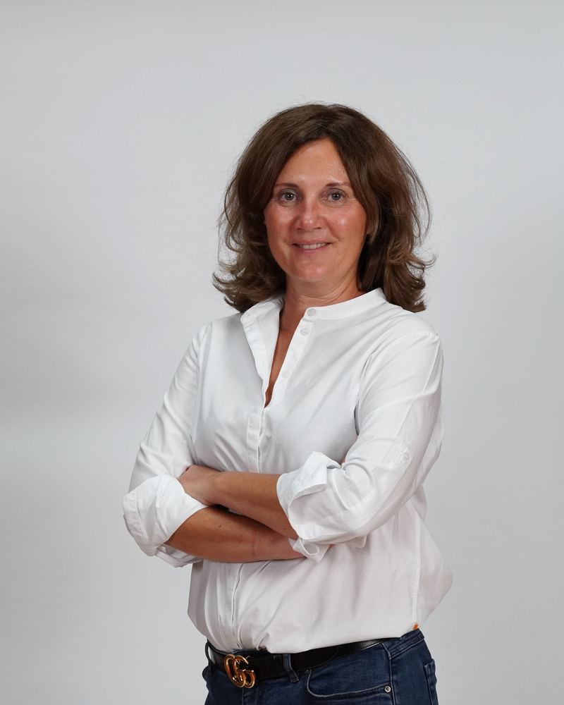
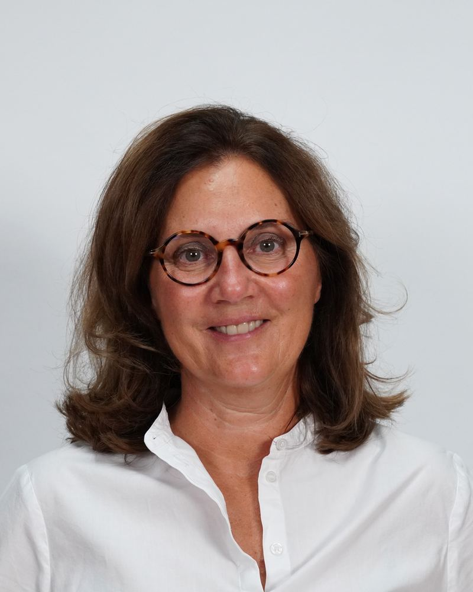

Kerstin Reichert
Dipl. Pflegefachfrau für Anästhesie, Co-Geschäftsführerin von narkose-team.ch GmbH
Ich bin diplomierte Pflegeexpertin für Anästhesiologie und bringe über 15 Jahre Erfahrung aus deutschen renommierten Universitätskliniken mit. Seit meinem Umzug in die Schweiz im Jahr 2010 habe ich in verschiedenen grossen Fachkliniken gearbeitet, u.a. in leitenden Rollen und in der Berufsbildung.
Weitreichende Einblicke und Erfahrungen im Sektor der nicht-stationären Anästhesie erschlossen sich mir beim grössten ambulanten Anästhesiedienstleister der Schweiz. Dort lernte ich Sicherheit mit Flexibilität und Mobilität in Arztpraxen und Tageskliniken zu kombinieren und die wirtschaftliche sowie logistische Führung eines ambulanten Narkoseunternehmens zu meistern.

Mit diesem wertvollen Erfahrungshorizont war ich bereits massgeblich an der Gründung eines Anästhesieunternehmens für plastische, rekonstruktive und ästhetische Chirurgie beteiligt.
Die Möglichkeit, meine Ideen und Visionen in die Tat umzusetzen, führte 2023 mit der narkose-team.ch GmbH zur Gründung unseres eigenen Unternehmens, in dem ich meine Leidenschaft für Anästhesie mit meiner umfassenden Erfahrung vereine.